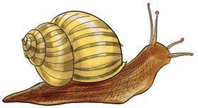
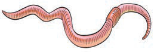
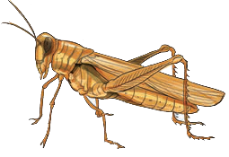

Invertebrates
Invertebrates are animals which do not have a vertebral column or backbone. Examples of invertebrates include snails, earthworms and grasshoppers. Figure 16 shows invertebrates.

Snail

Earthworm

Grasshopper
Figure 16: Invertebrates